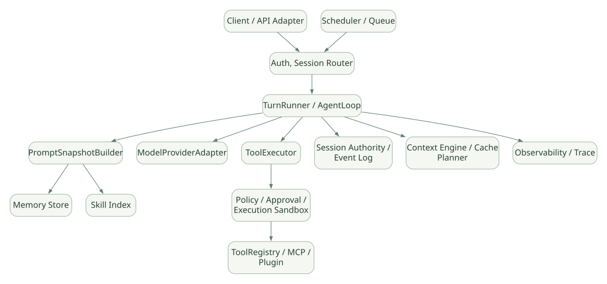

SECOND STUDY / 실패와 설계 비교
실패와 설계 비교
이번 단원의 읽는 관점
실패 시나리오를 상태 불변식과 연결하고 다른 기술과 비교할 기준을 정리합니다.
살펴볼 경계실제 확인한 구현, 일반 설계 제안과 실험으로 확인할 질문을 나눠 보세요.
이 페이지의 세부 목차
18. 7개 프레임워크 비교를 위한 Hermes 기준값#
이 표는 Hermes에 대해 이번에 분석한 구현 관점을 적은 것이고, 다른 기술의 기능 지원 여부를 새로 확정하는 표가 아니다. 향후 OpenAI Agents SDK, PydanticAI, Google ADK, Claude Agent SDK, Claude Code, Microsoft Agent Framework의 2차 문서에서 동일한 행을 조사한다.
| 비교 축 | Hermes 기준 관찰 | 다른 기술에서 확인할 질문 |
|---|---|---|
| 런타임 소유 | 완성형 Agent Loop·Gateway를 제품에서 제공 | Runtime은 SDK 안인가, 외부 CLI/서비스인가? |
| 루프 방식 | conversation_loop + Turn Phase 분리 |
Graph Node, Runner Loop, Middleware 기반인가? |
| 완료 조건 | 모델 Final, 예산·중단·복구·오류 분기 | 누가 Final 판정하며 어느 상태로 기록하는가? |
| Tool Definition | Registry + Model-facing Schema | Python 함수/데코레이터/Protocol/정적 Schema 중 무엇? |
| Tool Dispatch | Inline 특수 Tool + Registry Handler | 모두 동일 Middleware 경로를 따르는가? |
| 병렬 Tool | 세그먼트 계획 + Daemon Thread Pool | asyncio, Thread, Process, Worker 중 무엇? |
| Memory | Profile File의 Frozen Snapshot | 기본 장기 메모리/외부 Store / 세션 이력만 있는가? |
| Session | Gateway Canonical Writer + SQLite | Session Authority/Store의 주체가 누구인가? |
| Search | SQLite FTS5·CJK/Substring 옵션 | Semantic Vector / Hybrid 검색은 기본인가? |
| Context 압축 | ContextEngine + Prune/Summary | 압축 Trigger와 보존 정책이 명확한가? |
| Prefix Cache | Provider Cache Marker + Stable Prefix | 자동 최적화 또는 사용자 직접 설정인가? |
| Skills | 인덱스·점진적 로딩·Agent 작성·검토 | Skill 로딩·작성/변경은 누가 담당하나? |
| MCP | Tool 공급 및 별도 연결 표면 | Tool 권한·Credential·전송 장애를 관리하는가? |
| Plugin | Hooks·Tools·Context/Memory Provider | Framework Hook/Extension ABI가 있는가? |
| Guardrails | 다층 승인/명령·파일·Sandbox | Input/Output/Tool/OS 어디에 강제되는가? |
| Subagent | 독립 Child AIAgent, Task/Toolset | 격리 범위·비용·결과 Fan-in은 어떻게 되나? |
| Serving | Gateway + API/ACP/WS/메시징 | Session/Run/Stream/Resume 계약이 있는가? |
| Cron | Job Store + Trigger + Fresh Agent | 스케줄링 기능이 기본 제공인가 외부 의존인가? |
| Observability | Loop/Tool/Cache/Cron Metrics | Trace와 실제 Side Effect/비용을 연동하는가? |
18.1 'Hermes 같은 Framework를 직접 만든다면?' 구성 제안#
아래는 Hermes의 복제안이 아니라 연구 결과를 바탕으로 정리한 일반적인 설계 선택지다. 구현은 이번 범위에서 하지 않는다.
가로로 이동해서 읽을 수 있습니다. 도식 크게 보기 ↗

원문의 학습용 도식입니다. 연결 방향·분기 조건·점선·쌍방향 연결을 보존해 세로로 배치했습니다. 실제 구현·의사코드·해석의 구분은 본문을 함께 읽으세요.
도식 원문 보기 (Mermaid)
flowchart TB
E[Client / API Adapter] --> AUTH[Auth, Session Router]
AUTH --> R[TurnRunner / AgentLoop]
R --> PR[PromptSnapshotBuilder]
R --> P[ModelProviderAdapter]
R --> X[ToolExecutor]
R --> TX[Session Authority / Event Log]
PR --> MEM[Memory Store]
PR --> SK[Skill Index]
X --> G[Policy / Approval / Execution Sandbox]
G --> REG[ToolRegistry / MCP / Plugin]
R --> CT[Context Engine / Cache Planner]
S[Scheduler / Queue] --> AUTH
R --> OBS[Observability / Trace]별도 구현할지 판단할 인터페이스#
원문 수록 코드 발췌 · 버전과 제약 확인python
# 학습용 인터페이스 스케치. Hermes 실제 코드/API가 아님.
class AgentLoop:
def run_turn(self, session_id, user_input, budget): ...
class PromptBuilder:
def snapshot(self, session_id, model): ...
class ContextEngine:
def compact(self, history, token_budget): ...
class ToolExecutor:
def execute(self, call, policy_context, idempotency_key): ...
class MemoryStore:
def read_snapshot(self, profile_id): ...
def propose_write(self, mutation, provenance): ...
class SessionAuthority:
def append_event(self, session_id, expected_version, event): ...
class Scheduler:
def claim_occurrence(self, job_id, scheduled_instant): ...핵심 설계 선택 6개: (1) 상태 권한 집중 vs 분산, (2) Workflow Graph vs 모델 중심 Loop, (3) 메모리 파일 vs 외부 검색 인덱스, (4) 비동기/Thread 실행 vs 독립 Worker, (5) Human Approval vs OS Capability, (6) API 응답 대기 vs Durable Run Resource.